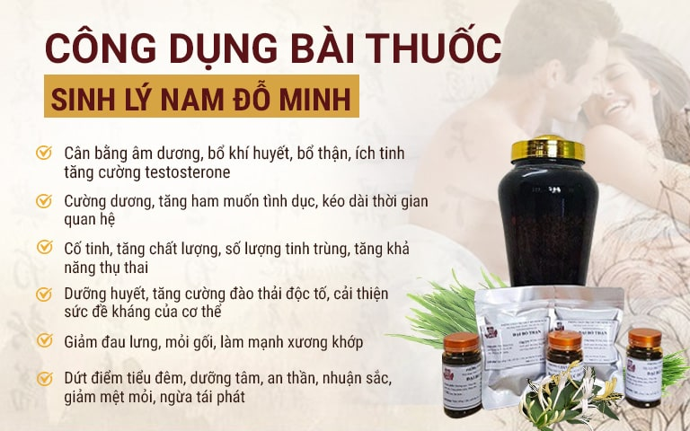
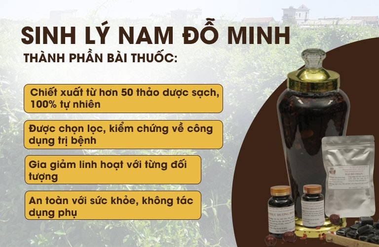

Tinh trùng sống được bao lâu trong bao cao su là kiến thức về sức khỏe giới tính bạn nên tìm hiểu kỹ. Ngoài ra, tinh trùng sống được bao lâu trong các môi trường khác cũng là thông tin nhiều người quan tâm. Hãy cùng tapchidongy.org tìm hiểu những kiến thức xoay quanh chủ đề này.

Tinh trùng sống được bao lâu trong bao cao su?
Tinh trùng sống được bao lâu trong bao cao su?
Như chúng ta đều biết, tinh trùng là một tế bào sinh sản, chứa bộ gen di truyền của nam giới. Khi quan hệ chúng được xuất ra có khả năng di chuyển trong môi trường âm đạo của nữ giới và tìm gặp trứng để bắt đầu quá trình thụ thai.
Ở người đàn ông trưởng thành, khỏe mạnh, mỗi lần đạt cực khoái sẽ phóng ra khoảng từ 1,5 – 5ml tinh dịch. Trong đó có thể chứa hơn 400 triệu tinh trùng. Thế nhưng không phải tất cả số đó đều sống sót, sẽ chỉ có 1 tinh trùng khỏe mạnh còn lại để thụ thai. Hoặc một vài trường hợp hiếm gặp 2 – 3 tinh trùng cùng sống dẫn đến hiện tượng thụ thai đôi, thai ba…
Đó là trong điều kiện thông thường, còn tinh trùng sống được bao lâu trong bao cao su? Đây cũng là thắc mắc của rất nhiều cặp đôi.
Trên thực tế, các loại bao cao chỉ có vai trò chứa tinh trùng được xuất ra, ngăn chúng tiếp xúc với âm đạo và xâm nhập vào cơ thể để thụ tinh. Bên cạnh chức năng phòng ngừa thai ngoài ý muốn thì bao cao su còn là biện pháp bảo vệ người sử dụng khỏi bệnh lây qua đường tình dục như sùi mào gà, lậu, giang mai, HIV,… Hiện nay, một số ít bao cao su có sẵn các hợp chất diệt tinh trùng bên trong nhưng không phổ biến.
Theo nghiên cứu, khi được xuất ra trong bao cao su, thời gian tinh trùng sống được lên đến 24 tiếng. Sở dĩ chúng tồn tại được lâu là do tinh trùng được bao bọc bởi tinh dịch. Thế nhưng không phải lúc nào khoảng thời gian đó cũng chính xác bởi có rất nhiều yếu tố ảnh hưởng đến tuổi thọ của tinh trùng.
Các yếu tố ảnh hưởng đến tuổi thọ của tinh trùng
Tinh trùng sống được bao lâu trong bao cao su còn phụ thuộc nhiều yếu tố. Theo đó, tuổi thọ nói chung của tinh trùng chịu sự phụ thuộc vào yếu tố khách quan (môi trường bên ngoài) và yếu tố chủ quan (tình hình sức khỏe sinh sản).
Yếu tố chủ quan
Một số tác nhân ảnh hưởng đến thời gian sống của tinh trùng trong bao cao su bao gồm:
- Sức khỏe nam giới
Nếu đàn ông có sức khỏe tốt thì số lượng và cả chất lượng của tinh trùng đều được đảm bảo. Bởi chúng là tế bào sống được sản xuất từ trong cơ thể của người đàn ông.
Trước khi được xuất ra bên ngoài, tinh trùng được vận chuyển qua nhiều cơ quan. Do đó nếu như nam giới không khỏe mạnh, các cơ quan sinh sản gặp vấn đề (bị tổn thương, bị bệnh lý, bị viêm nhiễm) sẽ làm thay đổi chất lượng tinh trùng. Trong một vài trường hợp đặc biệt, tinh trùng có thể bị chết trước khi được phóng ra ngoài hoặc có tuổi thọ rất ngắn.

Tình trạng căng thẳng kéo dài ở nam giới có thể gây suy yếu sinh lý
- Tuổi tác nam giới
Thông thường đàn ông tuổi tác càng cao thì chất lượng tinh trùng càng kém. Tuổi thọ tinh trùng của người lớn tuổi cũng không bằng các thanh niên khỏe mạnh. Đặc biệt tỉ lệ tinh trùng dị dạng cũng nhiều hơn.
- Chế độ dinh dưỡng
Nam giới nếu thường xuyên ăn các thực phẩm tăng cường sinh lý, vitamin, thì chất lượng và tuổi thọ tinh trùng cũng tốt và lâu hơn. Khi đó tinh trùng cũng sống sót lâu hơn ở môi trường bao cao su.
- Các bệnh lý nam khoa
Nam giới nếu mắc các bệnh nam khoa như: viêm đường tiết niệu, viêm bàng quang, viêm tinh hoàn,… sẽ ảnh hưởng đến quá trình sản xuất và chất lượng tinh dịch. Thậm chí tinh trùng được xuất ra đã bị yếu, loãng, vón cục, hoặc chết.
Tinh trùng sống được bao lâu trong bao cao su do yếu tố khách quan
Một yếu tố nữa quyết định thời gian sống của tinh trùng trong bao cao su phải kể đến là nhiệt độ môi trường bên ngoài.
Theo đó, môi trường thích hợp nhất để tinh trùng phát triển và tồn tại là 30-35 độ C. Nhiệt độ thấp hơn hoặc cao hơn đều ảnh hưởng đến tuổi thọ của chúng.
Tinh trùng sống được bao lâu trong bao cao su còn tùy thuộc vào yếu tố môi trường
Thời gian tồn tại của tinh trùng trong các môi trường đặc biệt
Nhiều nam giới cũng thắc mắc về tuổi thọ của tinh trùng trong một số môi trường khác. Sau đây là thông tin hữu ích mọi ngươi có thể tham khảo
Tuổi thọ của tinh trùng trong môi trường âm đạo
Sau khoảng 2 tiếng kể từ khi xuất tinh, 90% số lượng tinh trùng sẽ bị chết trong âm đạo của phụ nữ.
Thời gian này sẽ rút ngắn xuống nếu đối tác quan hệ là phụ nữ mang thai. Sự khác biệt ấy là do độ pH trong âm đạo của phụ nữ mang thai luôn cao hơn bình thường nên tinh trùng bị tiêu diệt nhanh hơn.
Thời gian sống của tinh trùng trong tử cung nữ giới
Chất dịch nhầy ở tử cung là một trong những môi trường lý tưởng để tinh trùng “ẩn náu”. Theo các thử nghiệm đã được công bố, sau 6 tiếng kể từ khi xuất ra, tinh trùng vẫn tồn tại khỏe mạnh. Thế nhưng chỉ sau 3 ngày thì gần như tất cả tinh binh đều đã bị tiêu diệt.
Tinh trùng sống được bao lâu trong môi trường bên ngoài?
Khi tinh trùng khỏe mạnh được phóng ra từ dương vật vào trong không khí, tùy từng trường hợp mà thời gian tồn tại khác nhau:
- Môi trường chứa tinh dịch của nam giới: thời gian tinh trùng sống và tồn tại có thể lên tới 20-24 giờ.
- Môi trường ẩm ướt: Tinh trùng tồn tại được khoảng từ 10-15 phút sau khi nam giới xuất tinh.
- Môi trường khô ráo, nhiệt độ cao: Chúng sẽ chết sau vài phút hoặc chết ngay sau khi nam giới xuất tinh.
Tinh trùng sống được bao lâu trong bao cao su và tồn tại được bao lâu trong các môi trường khác đã được giải đáp. Hy vọng nam giới có thể áp dụng những kiến thức khoa học đúng đắn vào việc tránh thai an toàn và hiệu quả.
Giải pháp KHỎE “tinh binh” MẠNH sinh lý nhờ bài thuốc gia truyền Sinh Lý Nam Đỗ Minh
Bài thuốc Sinh Lý Nam Đỗ Minh được nhiều quý ông “săn lùng” không chỉ bởi ưu điểm tăng cường sinh lý an toàn mà còn bởi khả năng nâng cao chất lượng tinh trùng hiệu quả. Phương thuốc từng xuất hiện trên sóng truyền hình VTV2, VTC2 trong Chương trình “Sống khỏe mỗi ngày” và “Góc nhìn người tiêu dùng” và được đông đảo khán giả quan tâm.
Hơn 150 năm ứng dụng vào trong thực tế điều trị bệnh, bài thuốc Sinh lý nam Đỗ Minh không chỉ được người bệnh công nhận về hiệu quả mà còn được giới chuyên gia đánh giá cao với các thế mạnh như:
Hiệu quả KÉP: Nâng cao chất lượng tinh trùng, tăng cường sinh lý
Bám sát quy tắc CÔNG BỔ KIÊM TRỊ theo YHCT, bài thuốc Sinh Lý Nam Đỗ Minh tác động CHUYÊN SÂU – TOÀN DIỆN bồi bổ thận khí, lưu thông khí huyết, cân bằng nội tiết tố nam, tăng sinh testosterone. Hiệu quả không chỉ giúp tăng cường sinh lý mà còn giúp dưỡng tinh, nâng cao chất lượng và số lượng tinh trùng.
Để mang lại hiệu quả mong muốn, phù hợp với mọi thể bệnh của nam giới hiện đại lương y Đỗ Minh Tuấn – truyền nhân đời thứ 5 dòng họ Đỗ Minh, Thầy thuốc nam tiêu biểu 2020 đã kết hợp 3 chế phẩm gồm Đại bổ thận, Đại bổ phục dương hoàn, Hồi Xuân phục dương thang mang lại.
Chất lượng “VÀNG” nhờ quy tụ 50 + “THƯỢNG DƯỢC” phòng the
Bài thuốc Sinh Lý Nam Đỗ Minh mang lại hiệu quả VƯỢT TRỘI nhờ sự phối ngũ đỉnh cao của hơn 50 vị thuốc quý, trong đó có nhiều vị “THƯỢNG DƯỢC” thời xưa chỉ dùng cho vua chúa. Một số vị chủ dược như: Dâm dương hoắc, Nhục thung dung, Ba kích, Cửu thái tử, Thạch liên tử, Kim anh tử,…
Các vị thuốc được kết hợp theo quy tắc QUÂN – THẦN – TÁ – SỨ đảm bảo tác động toàn diện, phát huy công dụng từ trong ra ngoài. Đặc biệt 100% thành phần đảm bảo nguồn gốc rõ ràng và đạt tiêu chuẩn GACP – WHO.
HÀNG NGÀN nam giới đã phục hồi phong độ nhờ phác đồ điều trị CÁ NHÂN HOÁ
Tuỳ vào tình trạng bệnh từng người, các lương y sẽ điều chỉnh linh hoạt theo từng đối tượng, phát huy hiệu quả rõ ràng. Nhờ đó, sau sử dụng nam giới sẽ thấy hiệu quả tích cực với những biểu hiện như: Cơ thể nhiều ham muốn, sung mãn, quan hệ lâu, cương cứng tốt….

Tiến trình điều trị của bài thuốc Sinh lý Nam Đỗ Minh
Thêm đó nhà thuốc hỗ trợ bào chế bài thuốc ở dạng viên hoàn, cao và rượu ngâm. Ngoài ưu điểm dễ sử dụng, thành phẩm còn thẩm thấu tốt vào thành dạ dày, phát huy công dụng VƯỢT TRỘI, rút ngắn thời gian điều trị.
Ưu điểm của bài thuốc đã giúp HÀNG NGÀN nam giới chấm dứt tình trạng “yếu – xìu – nhanh ra – tinh binh kém”. Theo kết quả khảo sát của nhà thuốc Đỗ Minh Đường năm 2018, có trên 90% nam giới đã tăng cường sinh lý chỉ sau 2 – 5 liệu trình. Phương thuốc nhận được niềm tin nhiều người nổi tiếng như NSUT Minh Tuấn, Diễn viên Lê Bá Anh. [CHI TIẾT: TẠI ĐÂY ]
Bạn đọc quan tâm tới bài thuốc Sinh lý nam của Đỗ Minh Đường, hãy liên hệ Nhà thuốc theo địa chỉ:
- Hà Nội: Số 37A ngõ 97 Văn Cao, phường Liễu Giai, Ba Đình. Hotline: 0984 650 816
- HCM: Số 179 Nguyễn Văn Thương, Phường 25, quận Bình Thạnh. Hotline: 0932 088 186
- Website: https://dominhduong.org
- Fanpage: https://www.facebook.com/nhathuocdominhduong